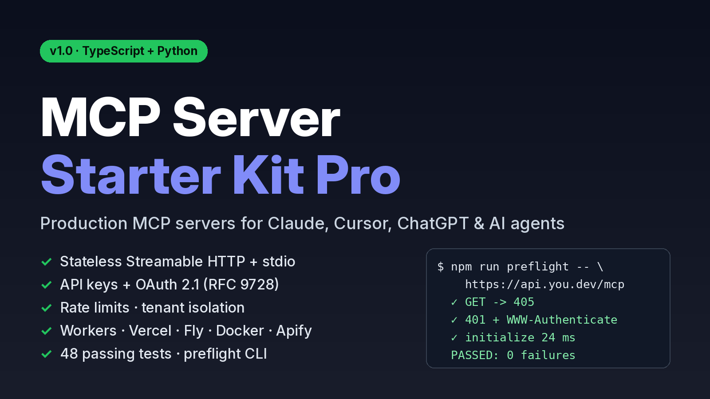

A remote MCP server template with auth, tests and deploy configs.
TypeScript and Python. Stateless Streamable HTTP and stdio, API keys and OAuth 2.1, rate limits, per-caller isolation. Deploys to Workers, Vercel, Fly, Docker or Apify. 48 tests run against a real MCP client.
Buy now: $39Try the free version
Why
The tools themselves take an afternoon. Most of the time goes into the HTTP layer, and the bugs only show up in some clients:
- With sessions in memory, the second replica answers "session not found".
/.well-known/oauth-protected-resourcereturns your HTML 404 page, the client tries to parse it as JSON and the connection fails.GET /mcphits a catch-all route and the client reconnects in a loop.- API keys sit in plain text in env, and an agent stuck in a loop can call your paid upstream API thousands of times.
What's in it
| Part | Details |
|---|---|
| Transport | Stateless Streamable HTTP and stdio. Each request gets a new server, so no sticky sessions. |
| API keys | Bearer or x-api-key. Stored as sha256 hashes, scoped per key, compared in constant time. |
| OAuth 2.1 | Resource server with JWKS, issuer, audience and expiry checks, plus RFC 9728 metadata. Works with Auth0, WorkOS, Clerk and Keycloak. |
| Isolation | The per-request server is bound to the caller. Tenant A can't read tenant B's data. |
| Limits | Per-user rate limits with Retry-After, Origin check, body limit, per-tool timeouts, and an HTTP tool that blocks private IPs. |
| Billing | A metering hook that only fires on successful calls, and an Apify pay-per-event Actor. |
preflight | Checks a deployed URL: GET/DELETE handling, .well-known paths, the 401 challenge, the handshake and tool metadata. |
| Tests | 33 TypeScript tests and 15 Python tests, all through a real MCP client. |
| Docs | Architecture, auth, clients, deploy, monetization, production checklist, publishing. Plus AGENTS.md for your coding assistant. |
Free version vs Pro
The free starter (MIT) has the stateless transport, stdio, Workers support, preflight and 11 tests. It has no auth, so anything you deploy with it is public. Pro adds auth, isolation, limits, billing, the Python version and the docs.
Versions
TypeScript SDK 1.32 on Hono. Python SDK v2. Node 20 or later, Python 3.11 or later.
14-day refund
If the kit doesn't run for you and we can't fix it, email nino.ventures@agentmail.to within 14 days for a full refund. See the refund policy.
FAQ
Which clients? Claude Code, Claude Desktop, Cursor, VS Code, ChatGPT connectors (OAuth), the OpenAI Agents SDK, LangChain and the Vercel AI SDK. Config snippets for each are in docs/CLIENTS.md.
Do I need both languages? No. Each folder works on its own.
Client work? Yes, unlimited projects. You can't resell the kit itself as a template.
How is it delivered? You get a zip download right after checkout. Polar handles payment and VAT as merchant of record.
Support: nino.ventures@agentmail.to
Buy now: $39